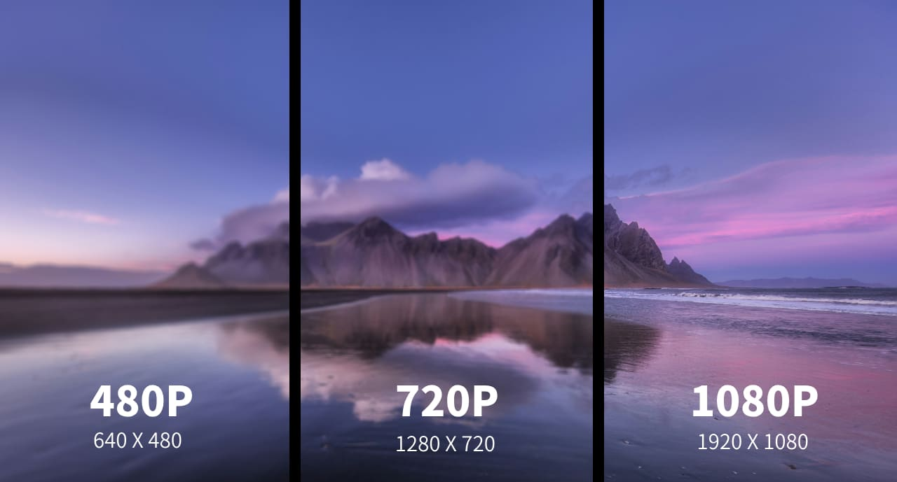
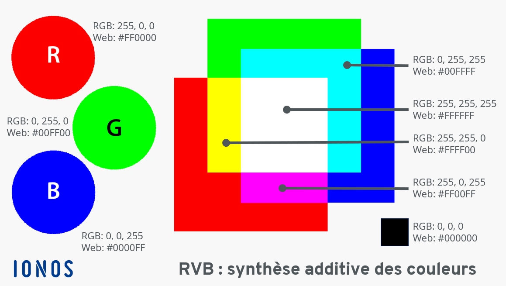

Les pixels et la résolution: définitions
Les pixels
Un pixel est la plus petite unité d’une image numérique. Chaque image est composée d’un ensemble de pixels qui affichent chacun une couleur.
La résolution
La résolution correspond au nombre total de pixels dans une image, souvent exprimé en largeur × hauteur (ex : 1920 × 1080). Plus la résolution est élevée, plus l’image est détaillée et précise.
Par exemple, une image en 1920 × 1080 contient plus de 2 millions de pixels.

Importance des pixels
- Les pixels déterminent la résolution de l’image
- Ils influencent la qualité visuelle
- Ils permettent le zoom sans perte importante (si nombreux)
- Ils jouent un rôle dans la taille du fichier
Caractéristiques des pixels
- Couleur (RVB : rouge, vert, bleu)
- Luminosité
- Position dans l’image
- Densité (nombre de pixels par surface)
Le modèle RVB (Rouge, Vert, Bleu)
Le modèle RVB est un système utilisé pour représenter les couleurs dans les images numériques. Chaque pixel est composé de trois couleurs de base : le rouge, le vert et le bleu.
L’intensité de chaque couleur varie de 0 à 255. En combinant ces trois valeurs, on peut obtenir des millions de couleurs différentes.

Différences selon la résolution
| Résolution | Nombre de pixels | Qualité d’image | Utilisation |
|---|---|---|---|
| 640 × 480 | Faible | Basse | Anciennes photos |
| 1280 × 720 | Moyenne | Correcte | Vidéo HD |
| 1920 × 1080 | Élevée | Très bonne | Full HD (écrans) |
| 3840 × 2160 | Très élevée | Excellente | 4K, photographie pro |
Avoir plus de pixels ne veut pas toujours dire meilleure image : si un capteur est petit, ajouter plus de pixels peut rendre chaque pixel trop petit pour capter correctement la lumière, produisant des photos “granuleuses” la nuit. Curieusement, des appareils avec moins de pixels mais un meilleur capteur peuvent donner des photos bien plus nettes.
Vidéo explicative
Voici ci-dessous une vidéo nous renseignant sur les pixels et leur rôle